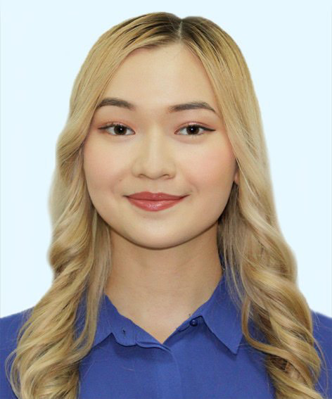

Kabanbay Batyr Avenue 53 • Astana, 010000 • arunanyssanbay@gmail.com • +77052239200
Education

MAX PLANCK RESEARCH INSTITUTE
- MSc+PhD "Neurosciences"
- Location: Göttingen, Germany
- Max Planck scholarship recipient
- German DAAD scholarhip award winner
NAZARBAYEV UNIVERSITY
- BSc "Biological Sciences"
- Location: Astana, Kazakhstan
- cGPA 3.49
- Relevant Coursework:
Neuroscience course (grade A), Genetics (A), Human Anatomy and Physiology I and II (A-), Programming Fundamentals (A-), Biology of Behavior (A-), Developmental Biology (A-).
Next...
Experience
NEUROSCIENCE LAB
- Research Assistant
-
Working on a project “The effect of Paeoniflorin (a biologically active component of Paeonia plant) on human astrocytoma cell viability in vitro”.
-
Studying anti-cancer properties of Paeoniflorin by measuring cytotoxicity using alamarBlue cell viability assay.
-
Quantifying cell apoptosis using annexin V-FITC staining and reactive oxygen species (ROS) levels using MitoSOX staining.
-
Got familiar with neuroscience lab equipment and applications, including cell culturing, electrophysiological recordings, cryostat manipulation, and brain microscopy.
MECHANOBIOLOGY LAB
- Research Assistant
- Worked with Drosophila flies. Learned the usage of equipment and principles to maintain the flies. Prepared nutritious media for Drosophila flies’ growth.
- Made dissection of Drosophila larvae under a stereoscope.
- Visualized cells on the confocal fluorescent microscopes ZEISS LSM 980 with Airyscan and Leica Thunder Imager. Observed cellular divisions of neural stem cells in Drosophila larvae’ brains.
- Studied the effects of Cathepsin G protease on the division of neural stem cells.
RESEARCH INSTITUTE OF MICROBIOLOGY
- Intern
- Analyzed the properties of various bacteria and fungi.
- Prepared nutritious media for bacterial and fungal growth (broth tube, agar slant, agar tube, agar plate).
- Participated in research experiments, including discovering bacteria that would enhance soil fertility in Kazakhstani steppe or discovering bacteria that can purify the Caspian Sea from oil contamination coming from neighboring factories.
- Learned how to use microbiology lab equipment and applications.
- Learned the principles of research design, ethics as well as data collection and interpretation.
RESEARCH INSTITUTE OF VIROLOGY
- Intern
- Learned how to analyze the activity of viruses. Checked viral infections using chicken embryos.
- Tested the effectiveness of various plant-based antiviral drugs on different viral species.
- Learned how to use virology lab equipment.
Next...
Skills and Interests
Laboratory:
Cellular culturing, cytotoxicity assays, fluorescent microscopy, visualization of cellular division under a confocal microscope, handling of Drosophila, dissection of Drosophila larvae under a stereoscope, electrophoresis, polymerase chain reaction (PCR), DNA/RNA extraction, anti-viral drug testing, gravimetric analysis, preparation of agar media for bacterial growth, bacterial culturing techniques, bacterial enumeration, usage of various research tools and equipment (weighting balance, bunsen burner, alcohol burner, pipettes, flasks, beakers, etc.).
Technical:
Python programming, Web programming.
Language:
Russian (native proficiency), English (professional working proficiency), Kazakh (professional working proficiency), German (elementary proficiency, A2 Goethe Certificate).
Next...
Leadership and Activities
“SYNAPSE” BIOLOGY CLUB
- Event manager
Actively participated in the organization of student events on biology topics (guest lectures, interviewing professors and successful alumni, social-media content creation). Collaborated with a team of 10 people as well as professors at Nazarbayev University.
TAEKWONDO CLUB
- Active participant
Actively participated in events. Showed taekwondo performances and taught beginners.
Organized and participated in taekwondo tournaments held at Nazarbayev University. Winner of the 1st place in my weight category (57 kg) in May 2022. The organizer of the international taekwondo tournament held in November 2022 at Nazarbayev University.
IGEM CLUB
- Event manager
Organized competitions on biology topics for students.
Coordinated a team of 5 people in the organization of events.
MINISTRY OF RESEARCH AND INNOVATIONS
- Event manager
Organized online events and contests for students in a team of 10 people.
Created posters and scripts for social media and made email announcements.
Learned how to use virology lab equipment.
Next...
Contacts